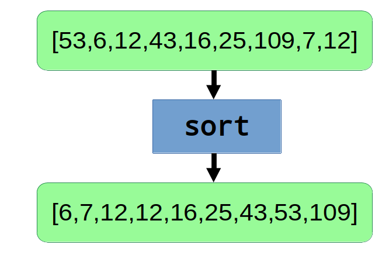
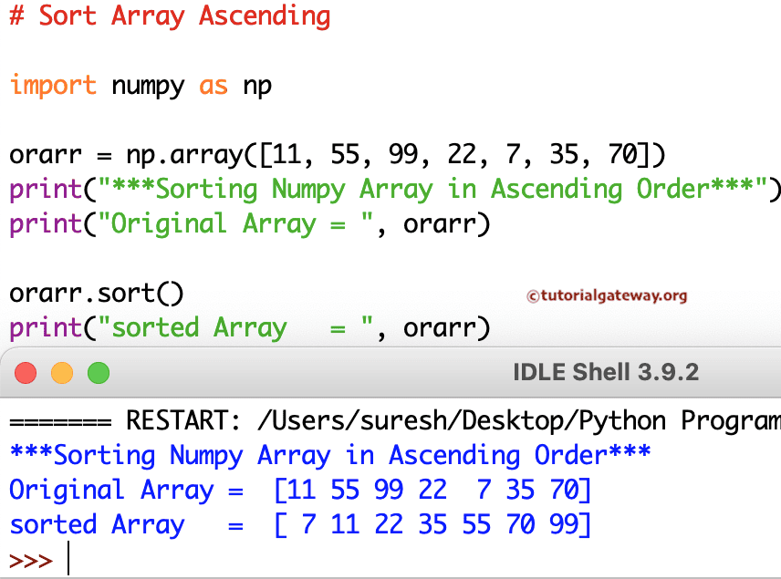

Fecha: 12-may-2025
Modalidad: Virtual
Herramienta: Python Online
➡️ Abrir Editor Online Python Online Python
➡️ Abrir Editor Online Python Programiz Online Python Compiler (Interpreter)
Las operaciones aritméticas se pueden realizar entre los elementos de las listas de Python, como la suma de elementos correspondientes en diferentes listas.
produccion_turno1 = [100, 120, 130]
produccion_turno2 = [110, 125, 135]
produccion_total = []
for i in range(len(produccion_turno1)):
produccion_total.append(produccion_turno1[i] + produccion_turno2[i])
print("Producción total por producto:", produccion_total)
Se pueden calcular estadísticas básicas como la suma, promedio, mínimo y máximo de una lista.
produccion = [100, 120, 130]
print(sum(produccion)) # Suma
print(sum(produccion) / len(produccion)) # Promedio
print(min(produccion)) # Mínimo
print(max(produccion)) # Máximo
El ordenamiento de listas es útil para organizar datos y facilitar su análisis.
produccion.sort() # Ascendente
produccion.sort(reverse=True) # Descendente
print(produccion)
El concepto de Broadcasting permite realizar operaciones en arreglos de manera eficiente, sin necesidad de recorrerlos manualmente.
En Python nativo, no existe Broadcasting automático, pero podemos simularlo aplicando operaciones a todos los elementos mediante comprensión de listas.
produccion = [100, 120, 130]
# Aumentar producción en 10%
produccion_incrementada = [p * 1.10 for p in produccion]
print("Producción incrementada:", produccion_incrementada)
NumPy permite aplicar operaciones directamente sobre arreglos sin necesidad de recorrerlos manualmente.
import numpy as np
produccion = np.array([100, 120, 130])
produccion_incrementada = produccion + 10
print(produccion_incrementada) # [110 130 140]
precios = np.array([200, 350, 400, 150])
precios_aumentados = precios * 1.05
print(precios_aumentados)
linea1 = np.array([100, 120, 140])
linea2 = np.array([90, 110, 130])
diferencia = linea1 - linea2
print(diferencia) # [10 10 10]
| Aspecto | Listas básicas | Arreglos NumPy |
|---|---|---|
| Código | Compresión de listas | Operación directa |
| Velocidad | Moderada | Alta (optimizaciones internas) |
| Requiere librería externa | No | Sí (NumPy) |
Gestionar producción de 5 líneas de manufactura.
produccion = [120, 110, 130, 100, 115]
produccion_total = sum(produccion)
promedio = produccion_total / len(produccion)
print("Producción total:", produccion_total)
print("Promedio:", promedio)
produccion.sort()
print("Producción ordenada:", produccion)
Incrementar eficiencias usando Broadcasting (simulado).
eficiencias = [78, 82, 88, 91, 76]
eficiencias_mejoradas = [ef * 1.05 for ef in eficiencias]
print("Eficiencias mejoradas:", eficiencias_mejoradas)
Subir el link en Moodle.
▶️ Ver video - ¿Cómo ordenar listas en Python? - Sort vs Sorted